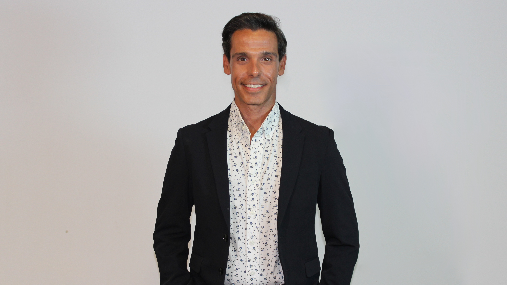

O Bloco de Esquerda e o LIVRE apresentam uma candidatura que une o legado de autarcas combativos a novas ideias de democracia participativa. Juntamos independentes para construir o programa para um futuro sustentável. Esta coligação parte da convergência e do diálogo com a população para responder às necessidades urgentes de Almada, para criar vizinhança, defender os serviços públicos e as famílias trabalhadoras e para dar esperança.
Almada merece ser um território onde qualquer pessoa tenha lugar. Uma cidade onde a habitação é um direito e não um luxo, onde os transportes funcionam para as pessoas, onde o ambiente é protegido e ninguém é deixado para trás.
Os oito anos de governação municipal PS e PSD falharam aos almadenses. Uma política sem transparência nem diálogo ou visão para as pessoas e o território. A entrega da autarquia aos interesses especulativos, ao colapso dos serviços públicos, à destruição ambiental à estagnação económica e social resultou na expulsão das populações local e no aumento das desigualdades.
Por casa para viver e por uma economia socialmente justa, esta é a candidatura de esquerda progressista que propõe- se como alternativa ao atual executivo municipal. Contamos com quem ambiciona uma Almada onde a solidariedade está acima do individualismo para construir uma Almada em Comum, em comunidade.
Cabeças de Lista

Candidato à Câmara Municipal de Almada Professor, Cantor, 41 anos
Sou filho da cidade de Almada; nascido, criado, educado em Almada, e nunca daqui sai, como a maior parte dos jovens da minha geração. Continuo a viver e a trabalhar em Almada, no centro, casa comprada, pratico voluntariado e desporto nas instituições Almadenses, padrinho de uma das marchas populares. Além de professor, sou cantor e ator profissional.
Nos últimos anos tenho visto Almada a perder o seu potencial, o poder a ser monopolizado, sendo que, perante também o avanço da direita e da extrema-direita no panorama nacional, é necessário agir, posicionarmo-nos e fazer algo pela Democracia. É preciso defender a educação como base para que a Democracia não se escape por entre os dedos, esse é um dos alicerces mais essenciais para conter o avanço dos totalitarismos.
PROGRAMA
- Reabilitar edifícios devolutos para habitação acessível - Almada tem mais de 9 mil casas vazias!
- Reservar 25% da nova construção para casas a custos controlados
- Controlar o turismo selvagem: limites ao Alojamento Local em zonas de pressão urbanística
- Apoiar o desenvolvimento de cooperativas de habitação
- Reduzir o IMI para as famílias e agravar à especulação imobiliária
- Construção camarária com renda acessível e/ou apoiada
- Dignificar e realojar os barrios precários
- Mais residências estudantis públicas
- Apoio a pessoas em risco de despejo, vítimas de violência doméstica, em situação de sem abrigo e estudantes/profissionais deslocados
- Maior coexistência de vários modos de transporte ligeiro e maior frequência de transportes públicos
- Almada dos 15 minutos: habitação, trabalho, escolas, comércio, serviços e cultura acessíveis a pé ou de bicicleta
- Mais transportes públicos, elétricos e integrados, com ligações rápidas a Lisboa e dentro do concelho
- Aumentar a frequência e horários noturnos nos transportes, com soluções flexíveis para os bairros
- Rede ciclável interligada e segura, com bicicletários e integração em sistema público de bicicletas partilhadas
- Mais zonas pedonais, menos tráfego automóvel e maior segurança rodoviária
- Reforçar as equipas do serviço municipal de higiene urbana e de recolha de resíduos urbanos
- Desbaratizações e desinfetar os contentores regularmente
- Campanhas de sensibilização cívica e de reciclagem
- Gestão de resíduos urbanos eficaz, assegurada como um serviço público
- Renaturalizar a cidade com mais espaços verdes através do programa Veredas de Almada
- Gestão pública da água, com preços justos para as famílias trabalhadoras
- Expandir a rede de hortas urbanas
- Criar corredores ecológicos e zonas de refúgio ao calor
- Antecipar a neutralidade carbónica no município
- Defesa intransigente da Costa da Arriba Fóssil e da Mata dos Medos
- Criar Comunidades de Energia Renovável, que envolvam moradores e serviços locais na produção de energia de forma partilhada
- Abrigos municipais dignos e apoio às associações locais de animais
- Vacinação gratuita e programas de adoção responsáveis
- Medidas éticas de controle populacional e proteção dos animais errantes
- Lançar a Nova geração de cooperativas
- Desenvolver uma economia de conhecimento e revitalizar a indústria tecnológica local, aproveitando fundos comunitários e através da cooperação entre a NOVA FCT, a Base Naval e o Arsenal do Alfeite como pólos de inovação
- Reforçar os serviços públicos, através da internalização, combatendo a precariedade e a falta de profissionais
- Apoio ao comércio de bairro e à agricultura local sustentável
- Criação de feiras, mercados e programas de valorização das lojas históricas
- “Selo Emprega Local”: incentivar empregos justos e de qualidade
- Turismo sustentável que respeite o território e valorize a cultura almadense
- Escola pública de qualidade e acessível a todos
- Melhoria do acesso à saúde e aos cuidados de proximidade
- Criar a Provedoria Municipal dos Direitos Humanos, para receber denúncias, mediar conflitos e encaminhar casos.
- Valorizar as comunidades locais, nacionais e estrangeiras, integrando-as na agenda cultural e política do município e incentivando o diálogo intercultural
- Implementar a rede municipal de cuidadores informais
- Combate ao racismo, à violência machista e à discriminação LGBTQIA+
- Programa Casas da Criação: centros comunitários de criação cultural e memória em lugares históricos que estejam abandonados, promovendo o diálogo entre diferentes áreas artísticas
- Alargar o financiamento e apoio técnico de proximidade às associações locais
- Programa Recuperar História: requalificar e divulgar património histórico
- Criar o Gabiente do Associativismo, com a desburocratização dos processos de candidaturas, formações para dirigentes associativos e integração das coletividades na agenda municipal
- Requalificar e criar mais equipamentos municipais desportivos, como skateparks, piscinas, pistas de atletismo, campos de futebol, basquetebol e outras modalidades
- Promover o legado local do Hip Hop, criando zonas para graffiters e diversificar a programação cultural com arte urbana
- Implementar Orçamentos Participativos em todas as freguesias para projetos transformadores do território
- Apoiar a criação de criação de comissões de moradores
- Instrumentos de democracia direta: assembleias cidadãs, assembleias de bairro e referendos locais
- Criar o Departamento Municipal de Consultas Públicas, com competências em comunicação inclusiva, design de processos participativos e mobilização à participação